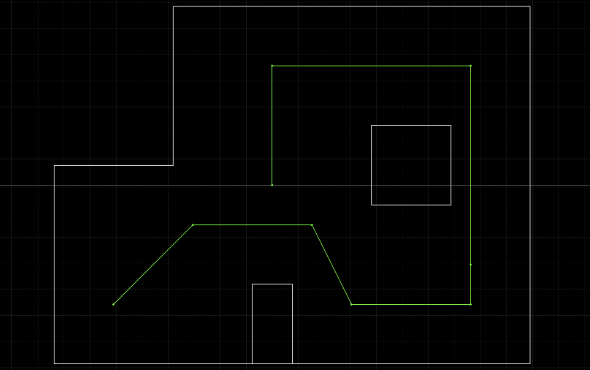

Lab 12PATH PLANNING AND EXECUTION
Woo! The purpose of this lab is to combine everything that we have learned from the previous 11!! labs to be able navigate our robot through a maze while hitting the waypoints that were specified. The final lab!
Design Approach
The spots on the map (below) that have an orange tap on them are the spots that we needed to hit.

This is the planned trajectory that I had.

I decided to implement PID control to help the robot navigate through the maze. When planning out my code, I wanted break up the sections into discrete chunks to be able to incrementally test
To achieve this, I designed 3 main arduino functions - FORWARD, TURN_POS_90, and TURN_NEG_90. Diving into the implementation ->
FORWARD: This command will stop the car after reaching a set distance. This function takes in the KP value + target distance - so it can be adapted for multiple sections of the map and I would not have to re upload the code. The steps go as follows: 1. Receive KP + Target distance 2. Receive TOF sensor data 3. Calculate error and adjust movement scale in accordance 4. Move forwards/backwards according to PID I only used a P controller to avoid integrator windup and also less overshoot. The code for this command is seen below.
TURN_POS_90: This command turn the car CW a specific value by adapting the code from Lab 9. The car keeps track of its angular position by with the angular velocity found from the gyroscope. This function also takes in the KP value + target distance. 1. Receive KP + Target angle 2. Receive IMU gyroscope data 3. Calculate error and adjust movement scale in accordance 4. Move according to PID The code for this command is seen below.
TURN_NEG_90: This command turn the car CCW a specific value by adapting the code from Lab 9. The car keeps track of its angular position by with the angular velocity found from the gyroscope. This function also takes in the KP value + target distance. 1. Receive KP + Target angle 2. Receive IMU gyroscope data 3. Calculate error and adjust movement scale in accordance 4. Move according to PID The code for this command is seen below.
CHALLENGES
After creating this amazing perfect super accurate controller :), I then placed it across the 4 different distances across the lab. The associated polar plots and TOF vs Time plots are shown for each point.
MAKE OVERALL MAP
Now, I computed the transformation matrices and converted the measurements from the TOF sesnor to a frame of reference of the room. I scaled up the readings of the robot to reference the room. This is the function that was used - inspired from ryan - .
Lo
RESULTS
After looking at my awful merged map, I added the lines on the maps based off the scale of the room and what my TOF sensor outputted.
REFLECTION & ACKNOWLEDGEMENTS
Thank you so much to all the wonderful TA's for having so many lab hours and for all their help + Professor Petersen for the course + lectures. This was a really challenging course but I learned a lot about robotics and met some really cool people, so for that I will be forever grateful. Special thank you to Anya + Johnathan, my lab TAs, for explaining various concepts to me and being supportive and encouraging when my robot would fail. See ya next time!!! :)